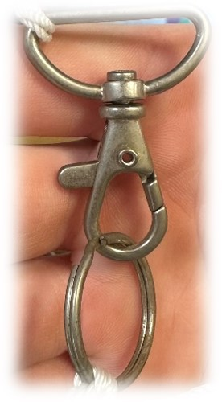
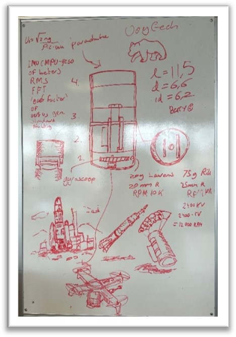
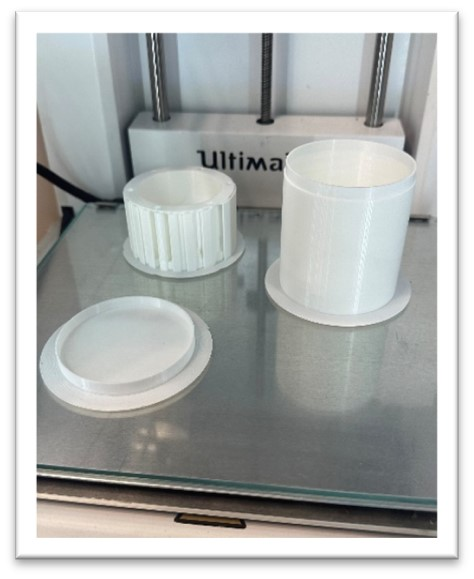

Our design
Our design consists of 3 compartments: the lower compartment, a middle compartment and an upper compartment (the lid). By using separate compartments all the parts are easily accessible and easy to install, and the wiring is better arranged. In the lower compartment, there are: the motor, gyroscopic disk, the driver module and the BME680. The upper compartment, which functions as a lid for the Cansat, will store the IMU and GPS. In the middle compartment there will be the battery, Arduino and the rest of the sensors, so the SD card and antenna.
The components that we will be inside the cansat:
- For the GPS, we use the ultimate GPS breakout v3 Adafruit. We choose this GPS, because it is very accurate and it is a high-sensitivity receiver.
- For the SD-card holder, we use the 5v ready micro-SD breakout board+. This SD-card holder was easily accessible and not that expensive.
- For the IMU, we use the Adafruit 9-DOF Accel/Mag/Gyro+Temp Breakout board. This IMU measures exactly what we need, and it’s very compact (great for Cansat).
- For the antenna, we use the Dipole GSM Antenna. For this antenna you don’t need a separate module. It can be connected directly to the Arduino. This antenna can be mounted to the wall of the Cansat, so it takes up less space than the radio communication we initially wanted to use.
- For the Arduino, we use the MKR WAN 1310. This Arduino is smaller than the one we initially received and this Arduino can function on lower energy, which is important because everything in the Cansat runs on 1 lipo battery.
- For the sensor for the primary mission, we have the Adafruit BME680 - Temperature, Humidity, Pressure and Gas Sensor. We use this because it measures 4 factors of its surroundings and it’s very compact. It is also very energy efficient.
- For the battery, we have the lithium 3,7V 2500 mAh battery. This battery gives us exactly what we need: energy. It is a quite new battery and it’s rechargeable, so great for multiple tests.
- For the Motor, we have the Aslong JGA-12-N-12N-20-30, DC-transmission motor 6V 500RPM. We use this motor, because it uses little energy, so that our 1S Lipo battery can provide enough energy. The motor uses gears at a 30:1 ratio to increase the torque and lower the speed.
- For the Motor driver module, we use the DollaTek Dual Dual Driver Module 1A TB6612FNG. This module is very efficient, compact and is easy to work with.
The materials used for building the Cansat are 3D-filament, and we will use duct tape for extra strength.
The parachute
The rule regarding how fast the CanSat has to descend is as follows:
"The launcher will reach an
altitude of 900 to 1000 metres within 13 seconds. Here, it will deploy all the CanSats. The whole
process-from rift off to touchdown must happen within 90 seconds. This only leaves 77 seconds for
your CanSat to descend 1000 metres. This is the most critical stage for your recovery system. If
your CanSat cannot meet this limit, it will not be approved foIt is therefore critical that your
parachute (or whatever you are using) does not fail during these 77 seconds." (cansat book)
This means our cansat has to descend with a speed of 1000/77=12,99
During the launch, the parachute can lay on top of our Cansat. When the descend starts, the parachute will expend by itself.
If we want the CanSat to descend at a constant speed of 13m/s, the gravity force must equal the drag force. After some calculations, we found out that our parachute must have sides of 13 cm when it’s an octagon shape. We have chosen for an octagon form parachute, because it’s easier to balance and easier to make straight cuts. The material of the parachute will be made from ripstop fabric nylon. We will sew the edges for extra strength and sew the ropes to the parachute.
The plan for the ropes that connect the CanSat to the parachute is as follows:
The ropes that are connected to the CanSat all go to one central point. This point can turn freely
and is connected to a hook. To that hook we add a metal ring and connect that to the ropes that are
connected to the CanSat body.
This way, the CanSat can move more freely, and the wires are less likely to get tangled up. The
sensors will pick up more fluctuations, which will make our measurements more precise.

When the parachute is made, sewed and prepared for use, we want to drop it with a weight of 350 grams from a height of at least 30 meter. From this, we also want to make a video analysis with Coach 7, to make sure that we reach a velocity of at least 13 m/s.

